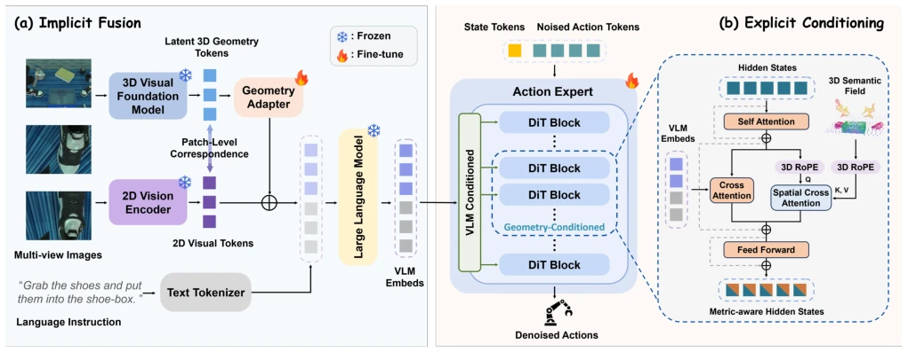
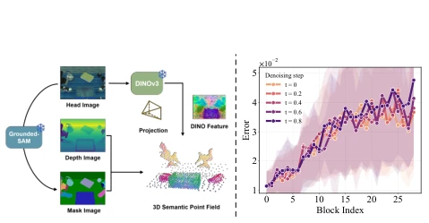
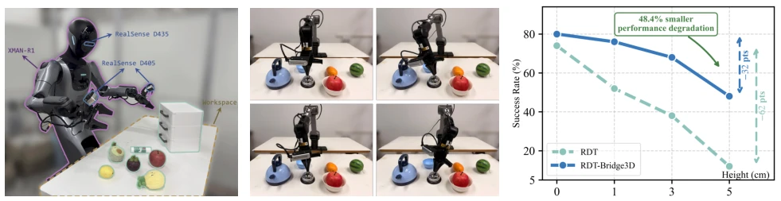
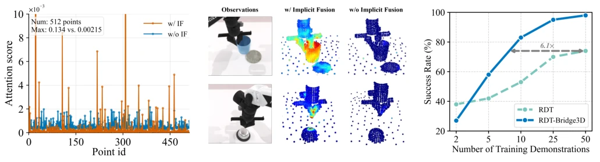
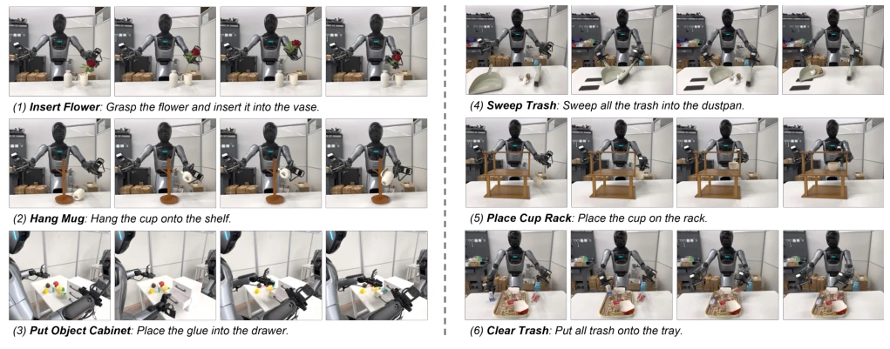

这篇论文给“瞎子”VLA 模型配了副 3D 眼镜。现有的 Vision-Language-Action 模型大多依赖 2D 视觉，在 3D 空间里就像拿着地图找路却看不见地形，精度捉急。Bridge3D 试图通过“隐式融合”和“显式条件”双管齐下来修补这个空间感知到动作生成的鸿沟。虽然它成功在 RoboTwin 2.0 和真机上刷了 SOTA，但依赖冻结的 3D 基础模型（如 VGGT）和额外的 3D 语义场构建，难免增加推理负担。不过，它用层-wise 探测精准定位瓶颈层，这点挺聪明，没盲目全量加载。总的来说，这是一次把 2D 大模型强行拉进 3D 物理世界的硬核尝试，虽然没解决所有泛化问题，但在精细操作任务上确实让 2D 模型有了“手感”。
This paper equips "blind" VLA models with a pair of 3D glasses. Existing Vision-Language-Action models mostly rely on 2D vision; in 3D space, it is like finding a way with a map but unable to see the terrain, where accuracy is a pressing concern. Bridge3D attempts to bridge this gap from spatial perception to action generation through a dual approach of "implicit fusion" and "explicit conditioning". Although it successfully achieved SOTA on RoboTwin 2.0 and real robots, relying on frozen 3D foundation models (such as VGGT) and additional 3D semantic field construction inevitably increases inference burden. However, it uses layer-wise probing to precisely locate bottleneck layers, which is quite smart, avoiding blind full loading. Overall, this is a substantial attempt to forcibly pull 2D large models into the 3D physical world; although it does not solve all generalization issues, it indeed gives 2D models a "tactile sense" in fine manipulation tasks.
研究动机Motivation
当前主流 VLA 模型（如 π0, RDT）主要基于 2D 观测训练，导致其缺乏精确的空间感知能力，难以在 3D 物理世界生成精准动作（Black et al. 2024; Liu et al. 2024）。这造成了“场景理解”与“精确动作生成”之间的 3D 感知到动作鸿沟。现有增强 3D 感知的方法（如 Spatial Forcing, PointVLA）多局限于丰富感知侧表示，未能将动作生成显式锚定在度量 3D 工作空间中（Li et al. 2025a; Li et al. 2026）。特别是缺乏显式几何引导，导致精细操作时精度不足。因此，亟需一个统一框架，既能利用 3D 先验提升理解，又能显式指导动作控制，填补这一感知与控制的断层。
Current mainstream VLA models (such as π0, RDT) are mainly trained based on 2D observations, leading to a lack of precise spatial perception capability, making it difficult to generate precise actions in the 3D physical world (Black et al. 2024; Liu et al. 2024). This creates a 3D perception-to-action gap between "scene understanding" and "precise action generation". Existing methods for enhancing 3D perception (such as Spatial Forcing, PointVLA) are mostly limited to enriching perception-side representations, failing to explicitly anchor action generation in a metric 3D workspace (Li et al. 2025a; Li et al. 2026). Especially lacking explicit geometric guidance, leading to insufficient precision during fine manipulation. Therefore, a unified framework is urgently needed, which can both leverage 3D priors to enhance understanding and explicitly guide action control, filling this gap between perception and control.
方法Method
Bridge3D 包含两个协同策略。首先是隐式融合（Implicit Fusion），采用双流编码：VLM 提取语义 token，3D 基础模型（VGGT）提取几何 token，通过轻量残差适配器将几何特征融合进视觉 token，增强 3D 场景理解。其次是显式条件（Explicit Conditioning），构建 3D 语义场，将 RGB-D 观测升维为带语义的点云场。在动作专家中，利用 3D RoPE 和空间交叉注意力，让动作隐藏状态查询 3D 场点，获取度量空间线索。此外，通过层-wise 线性探测发现空间感知在第 7-11 层退化最严重，因此仅在这些关键块引入显式条件模块，既保证空间智能又避免破坏去噪能力。整体流程从 2D 视觉到 3D 语义场，再到 3D 引导的动作生成，实现了端到端的 3D 增强。
Bridge3D includes two collaborative strategies. First is Implicit Fusion, adopting dual-stream encoding: VLM extracts semantic tokens, 3D foundation model (VGGT) extracts geometric tokens, fusing geometric features into visual tokens via a lightweight residual adapter, enhancing 3D scene understanding. Second is Explicit Conditioning, constructing a 3D semantic field, lifting RGB-D observations to a semantic point cloud field. In the action expert, utilizing 3D RoPE and spatial cross-attention, allowing action hidden states to query 3D field points, obtaining metric space clues. Additionally, through layer-wise linear probing, it was found that spatial perception degrades most severely in layers 7-11, therefore explicit conditioning modules are introduced only in these key blocks, ensuring spatial intelligence while avoiding destroying denoising ability. The overall process flows from 2D vision to 3D semantic field, then to 3D-guided action generation, achieving end-to-end 3D enhancement.

Figure 1: The architecture of Bridge3D. The framework contains two synergistic strategies. Implicit Fusion augments 2D visual features with geometry-aware representations extracted by a pretrained 3D foundation model. Explicit Conditioning integrates a 3D semantic point field into the action expert for precise action generation.

Figure 2: (Left) Construction of the 3D semantic field. (Right) Layer-wise linear probing error of spatial localiza- tion across DiT blocks under different denoising steps.
On the RoboTwin 2.0 simulation benchmark, Bridge3D achieves SOTA on 10 tasks, with relative success rate improvements of 26.1% and 34.6% compared to RDT and GR00T-N1.5 respectively. On the real-world KEENON XMAN-R1, average success rate improved by 42.9%, especially significantly in cm-level precision tasks (such as flower arranging). In terms of data efficiency, only 6.1 times fewer training samples are needed to achieve equivalent performance. Ablation studies indicate that implicit fusion and explicit conditioning complement each other, and adding explicit conditioning only in specific layers (#7-11) yields the best results. Additionally, in zero-shot tests with unseen height variations, Bridge3D demonstrates stronger spatial generalization capability than 2D baselines, proving the effectiveness of its 3D geometric guidance.

Figure 6: (a) Real-world setup of XMAN-R1 with head and wrist-mounted RGB-D cameras. (b) To evaluate zero-shot gen- eralization to unseen tabletop heights, we test Bridge3D at height offsets of 0, 1, 3 and 5cm. (c) Our method exhibits lower performance degradation than RDT under unseen height shifts.
其他图片Other Figures

Figure 4: (a) We report the spatial cross-attention scores from action hidden states to a sampled subset of 512 points in the 3D semantic field, compared with and without Implicit Fusion (IF). (b) The red area corresponds to larger attention score, while the blue area corresponds to smaller attention score. (c) Our proposed framework exhibits significant improvements in data efficiency.

Figure 7: Task process visualizations in six real-world tasks.